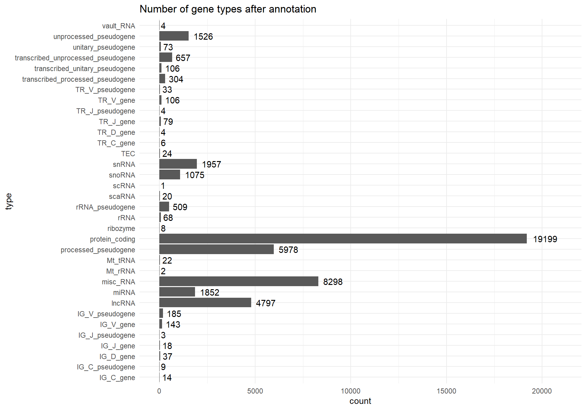
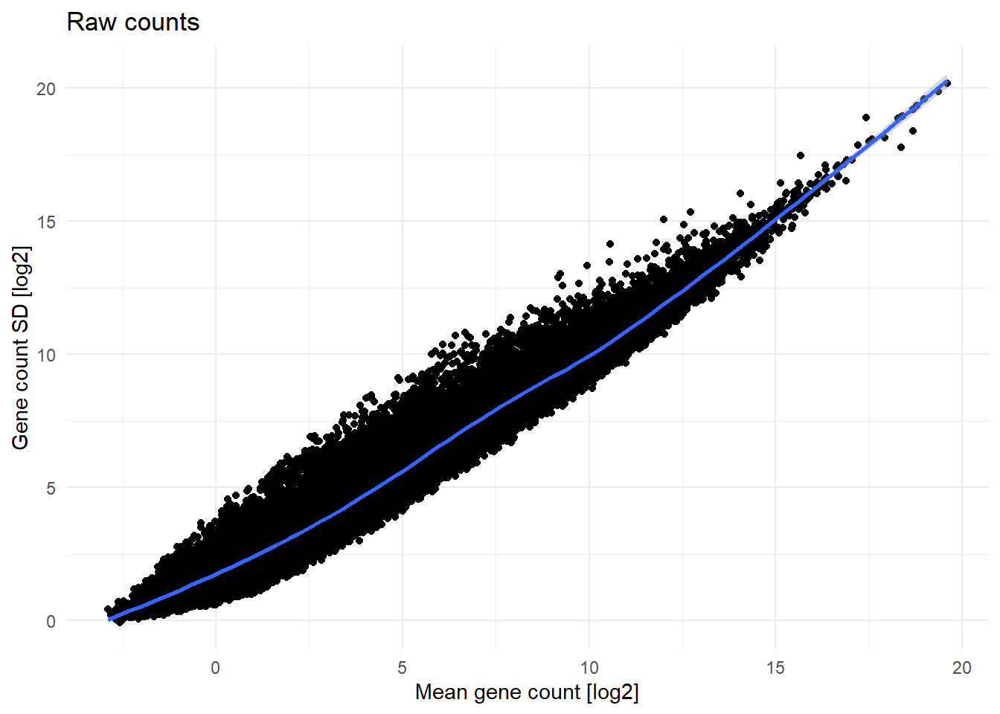
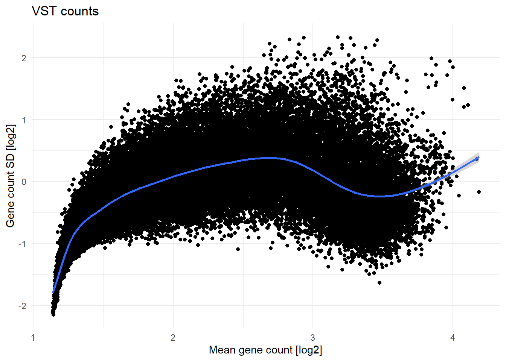

#load original count matrix from stored in RDS file
raw.counts <- readRDS('raw_counts.rds')
#prepare list of unique sythetic gene names
encrypt.genes<- c()
for(x in 1:nrow(raw.counts)){
curnam<-paste(sample(c(letters,LETTERS), 4, replace = T),collapse='')
while(curnam%in%encrypt.genes){
curnam2 <-paste(sample(c(letters,LETTERS), 4, replace = T),collapse='')
assign(x = "curnam", value = curnam2)
}
encrypt.genes <- append(encrypt.genes, curnam)
}
#Some of the gene names in raw counts file were duplicated, hence the duplicated original names were excluded
encrypt.genes.dictionary <- data.frame(actual = raw.counts$gene_name, encrypted = encrypt.genes) %>%
filter(!duplicated(actual))
#assign original gene names to rownames for easier subsetting/ordering
rownames(encrypt.genes.dictionary) <- encrypt.genes.dictionary$actual
#Original count file contained duplicated gene names.
#To reproduce this problem, synthetic gene names were also duplicated to correspond to original duplication pattern
encrypt.genes.dictionary <- encrypt.genes.dictionary[raw.counts$gene_name,]
#annotation of genes using biomartr package
all.genes.annot <- biomartr::biomart( genes = raw.counts$gene_name, # genes were retrieved using biomartr::getGenome()
mart = "ENSEMBL_MART_ENSEMBL", # marts were selected with biomartr::getMarts()
dataset = "hsapiens_gene_ensembl", # datasets were selected with biomartr::getDatasets()
attributes = c("gene_biotype"), # attributes were selected with biomartr::getAttributes()
filters = "external_gene_name") # specify what ID type was stored in the fasta file retrieved with biomartr::getGenome()
annot.encryption.dictionary <- encrypt.genes.dictionary[all.genes.annot$external_gene_name,]
#check if all the actual names are the same and in the same order in the encryption data frame and target data frame
all(annot.encryption.dictionary$actual == all.genes.annot$external_gene_name)
all.genes.annot.encrypted <- all.genes.annot
all.genes.annot.encrypted$external_gene_name <- annot.encryption.dictionary$encrypted
#prepare list of synthetic sample IDs
clin.data <- read.csv('clin_data.csv') %>% select(!1)
anonymized.IDs <- c()
for(x in 1:nrow(clin.data)){
anonymized.IDs<-append(anonymized.IDs, paste0('Sample',x))
}
samples.dictionary <- data.frame(actual = clin.data$Sample.ID, encrypted = anonymized.IDs)
clin.data.encrypted <- clin.data %>%
mutate(Sample.ID = samples.dictionary$encrypted)
#encrypt gene names and sample names
all(raw.counts$gene_name == encrypt.genes.dictionary$actual) #make sure gene names are in the same order
raw.counts <- raw.counts[,c('gene_name',samples.dictionary$actual)] #order the count data to match the sample IDs order
all(colnames(raw.counts)[2:ncol(raw.counts)] == samples.dictionary$actual) #make sure sample names are in the same order
raw.counts.encrypted <- raw.counts[,c('gene_name',samples.dictionary$actual)]
colnames(raw.counts.encrypted)[2:ncol(raw.counts.encrypted)] <- samples.dictionary$encrypted
raw.counts.encrypted$gene_name <- encrypt.genes.dictionary$encrypted
#write CSV files used in for the following analysis
write.csv(all.genes.annot.encrypted, 'all_genes_annot_encrypted.csv')
write.csv(raw.counts.encrypted, 'raw_counts_encrypted.csv')
write.csv(clin.data.encrypted, 'clin_data_encrypted.csv')Custom clinical trial RNAseq pipeline
This is an analysis pipeline of a bulk RNAseq of samples collected from acute lymphoblastic leukemia (ALL) patients’ bone marrow (BM) and peripheral blood (PB) as a part of a undisclosed clinical trial. This analysis is performed on real-life clinical triala data, but as the data and results were not published yet, both count and clinical data were encrypted to some extent. Two of the variables in the encrypted clinical annotation file (Group and Event) were encrypted, as they are corresponding to relevant clinical features analyzed in the unpublished analysis.
Note
Part of this analysis is subsetting genes by their type (i.e. protein coding genes). The gene annotation process required the original names, so it can’t be reproduced using encrypted data provided with this analysis. If you would like to see how the gene annotation and encryption was performed, please expand the collapsed section below to see the R code used.
Encryption process
#Setup and data loading
First, load libraries and set seed for the analysis, as some of the methods used in this pipeline rely on random numbers generation.
library(dplyr)
library(ggplot2)
library(gtsummary) #for clinical tables
library(DESeq2) #DEG analysis and some functions for data transformation
library(factoextra) #for PCA visualisations
#set seed
set.seed(123)Now, let’s load the files relevant to the analysis (clinical annotation for samples, raw count matrix and list of genes annotated by their names).
clin.data <- read.csv('RNAseq files/clin_data_encrypted.csv') %>% select(!'X')
raw.counts <- read.csv('RNAseq files/raw_counts_encrypted.csv') %>% select(!'X')
all.genes.annot <- read.csv('RNAseq files/all_genes_annot_encrypted.csv') %>% select(!'X')Raw counts pre-processing
First step of the analysis is checking the quality of raw counts. First, the genes are checked for any duplicated gene names:
sum(duplicated(raw.counts$gene_name))[1] 1233and whether there are any non-expressed genes (genes with raw counts < 10 in less than 3 samples):
sum(!rowSums(raw.counts > 10) >= 3)[1] 11091
Note
The thresholds for counts and number of expressing samples were chosen arbitrarily, although they’re a good starting point, as suggested in the example DESeq2 pipeline. Those numbers might need to be modified for other analyses.
Duplicated low/non expressed genes are not desired for downstream analyses of RNAseq, as they might introduce additional noise to the data and don’t provide much additional information. Hence, duplicated and non expressed genes were filtered from the dataset.
#sort genes/rows from the ones with highest row-sum count
raw.counts.clean <- raw.counts[order(raw.counts$gene_name, -(rowMeans(raw.counts[,2:length(colnames(raw.counts))])) ), ]
#keep only the first occurence of a gene (first has the highest total number of counts)
raw.counts.clean <- raw.counts.clean[!duplicated(raw.counts.clean$gene_name),]
#replace rownames with gene_names
rownames(raw.counts.clean)<-NULL
raw.counts.clean <- raw.counts.clean %>% tibble::column_to_rownames('gene_name')
#check for genes with relevant expression (counts > 10 in at least 3 samples, as recommended by DESeq2 pipeline for bulk RNAseq)
row.filter = rowSums(raw.counts.clean > 10) >= 3
#filter out non-expressed genes and non-numeric columns
raw.counts.clean <- raw.counts.clean[row.filter,]This leaves 46981 of expressed and unique genes, which were taken for the downstream analysis.
The genes were then annotated with gene types using biomartr package, to enable subsetting and analysis of genes, i.e. selecting protein coding genes only. Annotation was performed using biomartr package with ENSEMBL homo sapiens reference genome.
Caution
In case of the encrypted files, annotation had to be performed prior to encryption of gene names, as it requires original gene names. For code used for annotation, refer to Encryption process section at the beginning of this document.
Below are the counts of each gene type after annotation:
ggplot2::ggplot(data = data.frame(type = names(table(all.genes.annot$gene_biotype)), count = as.numeric(table(all.genes.annot$gene_biotype))), aes(x=type,y=count))+
geom_bar(stat='identity')+
geom_text(aes(label=count),hjust=-0.25)+
coord_flip()+
ylim(0,21000)+
ggtitle('Number of gene types after annotation')+
theme_minimal()

Note
It is worth noting, that the sum of all counts after gene annotation (Figure 1) is slightly bigger than number of genes (rows) in the raw.counts.clean matrix. It’s because some of the genes were assigned to multiple classes of gene types during the annotation.
Samples characteristics and subsetting
Prior to any analysis, samples could be subsetted to minimize the noise in the data. As the low/non-expressed and duplicated genes were already filtered out, next step would be sample exclusion and / or subsetting. First, clin.data was slightly modified and cleaned.
Then, the samples were divided into two groups, depending on the ALL type (either T or B cell lineage).
Now, the patient’s clinical data can be summarized in a table for a better overview of the samples at disposal:
| Characteristic | B-ALL, N = 254 | T-ALL, N = 265 |
|---|---|---|
| Gender | ||
| Female | 126 (50%) | 63 (24%) |
| Male | 128 (50%) | 202 (76%) |
| Age at diagnosis [years] | 5.8 (2.9, 11.2) | 9.4 (5.2, 13.2) |
| First event | ||
| Censored | 2 (0.8%) | 5 (1.9%) |
| Death | 5 (2.0%) | 2 (0.8%) |
| None | 67 (26%) | 230 (88%) |
| Progression | 0 (0%) | 1 (0.4%) |
| Relapse | 171 (68%) | 20 (7.6%) |
| Relapse (off-therapy) | 6 (2.4%) | 0 (0%) |
| Second Malignant Neoplasm | 2 (0.8%) | 4 (1.5%) |
| Unknown | 1 | 3 |
| Event free survival [years] | 2.70 (1.50, 4.80) | 6.00 (5.10, 6.80) |
| Unknown | 1 | 3 |
| Overall survival time [years] | 4.90 (2.40, 8.20) | 6.15 (5.20, 6.80) |
| Unknown | 0 | 3 |
| Genetic subtype | ||
| BCR-ABL1 | 5 (2.4%) | 0 (NA%) |
| ETV6-RUNX1 | 21 (10%) | 0 (NA%) |
| Hyperdiploid; status of 4 and 10 unknown | 2 (1.0%) | 0 (NA%) |
| Hyperdiploidy without trisomy of both chromsomes 4 and 10 | 25 (12%) | 0 (NA%) |
| iAMP21 | 8 (3.8%) | 0 (NA%) |
| MLL rearranged | 4 (1.9%) | 0 (NA%) |
| None of the above | 103 (49%) | 0 (NA%) |
| TCF3-HLF | 2 (1.0%) | 0 (NA%) |
| TCF3-PBX1 | 21 (10%) | 0 (NA%) |
| Trisomy of both chromosomes 4 and 10 | 19 (9.0%) | 0 (NA%) |
| Unknown | 44 | 265 |
| Relapse (any site) | 177 (70%) | 21 (7.9%) |
| Group | ||
| Group 1 | 203 (80%) | 186 (70%) |
| Group 2 | 51 (20%) | 78 (30%) |
| Unknown | 0 | 1 |
| Event | 29 (13%) | 14 (5.3%) |
| Unknown | 34 | 0 |
| Primary/recurrent | ||
| Primary | 189 (74%) | 265 (100%) |
| Relapsed | 65 (26%) | 0 (0%) |
| Tissue | ||
| Bone marrow | 199 (78%) | 245 (92%) |
| Peripheral blood | 55 (22%) | 20 (7.5%) |
First things that stand out in the data are:
- B-ALL cohort:
- For some patients there is no either no information about genetic subtype (44 patients) or it is undisclosed (described as
None of the above- 103 patients) - There is missing information about
Eventoccurence (34 patients) - There are 65 non-diagnostic samples (isolated at relapse)
- There are samples isolated from different tissues (199 and 55 samples isolated from bone marrow and peripheral blood, respectively)
- For some patients there is no either no information about genetic subtype (44 patients) or it is undisclosed (described as
- T-ALL cohort:
- The gender distribution is heavily skewed towards males
- There is no information about genetic subtype for any of the patients
- There are samples isolated from different tissues (245 and 20 samples isolated from bone marrow and peripheral blood, respectively)
From genetics standpoint, the characteristics mentioned above may introduce noise to the data, as they might have an impact on gene expression, i.e. there is no biological reason to analyze bone marrow and peripheral blood, so the samples have to be sybsetted before analysis. To understand whether other features have an impact on overall gene expression and to see whether there were other noise-inducing factors (such as batch effect, as the count data was provided by multiple clinical centers), PCA and UMAP were performed to identify any patterns.
PCA and UMAP - all samples
VST of counts
For the PCA and UMAP analysis (and all other distance-based analyses), the counts need to be normalized (to enable between-samples comparisons) and variance stabilized (to remove mean counts to standard deviation dependence, that causes highly-expressed genes to have more weight attached to them in the downstream analyses). DESeq2 package has a vst function that first performs normalization, using ‘median of ratios’ method, and then does the variance stabilization. More detailed description of the methods used by DESeq2 package can be found in its documentation.
vst.counts <- vst(as.matrix(raw.counts.clean))The mean expression and standard deviation dependence before and after VST is shown below on Figure 2.
ggplot(
data = data.frame(SD = log2(matrixStats::rowSds(as.matrix(raw.counts.clean))), Means = log2(rowMeans(raw.counts.clean))),
aes(x = Means, y=SD)
)+
geom_point()+
geom_smooth()+
theme_minimal()+
labs(title='Raw counts',
x = 'Mean gene count [log2]',
y = 'Gene count SD [log2]')
ggplot(
data = data.frame(SD = log2(matrixStats::rowSds(as.matrix(vst.counts))), Means = log2(rowMeans(vst.counts))),
aes(x = Means, y=SD)
)+
geom_point()+
geom_smooth()+
theme_minimal()+
labs(title='VST counts',
x = 'Mean gene count [log2]',
y = 'Gene count SD [log2]')


After VST, the count matrix is ready for further analysis.
Global patterns in whole dataset
Even though one can use biology domain knowledge to subset the samples accordingly, so the analysis makes biological sense, it might be a good practice to look at the whole dataset to see whether any clinical features drive variance in the dataset.
To visualize global patterns in the whole multi-dimensional expression data, PCA was performed first. Then, the UMAP was performed on all PCs that explain more than 1% of variance in the data (sometimes 70-80% of cumulative explained variance threshold for downstream analysis using PCs is used, although it’s more suitable for data where several top PCs explain significant portion of the whole variance present in the data).
First, PCA was performed for the whole dataset. PCA results were centered for better visualization, but not scaled, as VST data shouldn’t be scaled further.
current.pca <- vst.counts %>%
t() %>%
prcomp(scale=F, center=T)Then, the scree plot of PCs, that each explain more than 1% of variance, can be plotted.
#get number of top PCs, each explaining more than 1% of variance
npcs = sum(summary(current.pca)$importance[2,]>0.01)
#plot scree plot of top 2 PCs
fviz_eig(current.pca,
addlabels = F,
ncp=npcs)+
labs(title=paste0('Scree plot, whole dataset'),
subtitle=paste(npcs,' top PCs',sep=''))+
ylim(0,plyr::round_any(max(summary(current.pca)$importance[2,])*100, 5, f = ceiling))
The top 2 PCs explain approx. 35% of variance present in the dataset which, given the heterogenity of the samples used for the analysis, is a decent value. To see whether there are any clear patterns emerging within just those 2 top PCs, PC1 vs PC2 can be plotted using fviz_pca_ind function from factoextra package.
fviz_pca_ind(current.pca,
geom = c('point')
)+
labs(title = paste0('PCA plot - centered, whole dataset'))
Clearly, PC1 and PC2 allow for identification of 3 separate clusters in the data. To see whether any particular clinical feature drives this separation, plot can be colored by feature.
fviz_pca_ind(current.pca,
geom = c('point'),
col.ind = clin.data[,'Relapse'], #color dots by feature from clin.file
)+
labs(title = paste0('PCA plot - centered, whole dataset'))
B-ALL - prognostic marker for Event in diagnostic bone marrow samples
For this analysis, only diagnostic bone marrow B-ALL samples were selected, as analysis of B and T cell ALL together makes no biological sense, as the different lineage